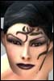

Anarchy Online Bulletin Board > Professions > Soldier (Boot Camp) > Top Ten Soldier Questions and Answers
Anarchy Online Bulletin Board > Professions > Soldier (Boot Camp) > Top Ten Soldier Questions and Answers| Pages (10): « First ... « 7 8 [9] 10 » |  Last Thread Next Thread Last Thread Next Thread  |
| Author | Thread |
| Zentinel Guest | ... The last serious Soldier site was "The sharp end" it was just a forum for soldiers... But it died in october 01....... The reason there is no soldier sites is that there is nothing to discuss, no nanos to discuss no weapons no tactics... heh soldiers have been useing the same weapons and tactics for almost a year now....there just aint mutch soldiers can do but fire guns.....and were not getting better at it.. |
 June 12th, 2002 02:31 June 12th, 2002 02:31 | #161 |
| Ceciliadoc Leetas  | What is a good armor for a lvl 60 soldier to use? |
| June 12th, 2002 13:33 | #162 |
| LucidTrance Eleet  | well i can see most of us are upset with the answers we have been given. and frankly i can understand. dosent look as if the soldier is going to recieve any attention any time soon. which is a real pitty. i think the soldier has alot to offer. its quite a fun role to play. not to mention were cool  these things are a must if we want to make soldier players feel good about their role in the game. buffs for the weapons we use. ( every other prof has them cept us) greater variety of weapons. ( face it. we got 1 choice, nova) reduced requirement on our higher nanos ( i think most of us can agree that if we put that many points into our nano departments by lvl 200 we would be equivilant of a lvl 30 soldier in combat skills.) perhaps FC does have a plan for us and is hush hush for now. perhaps they dont give a toss . i dont know |
| June 12th, 2002 16:16 | #163 |
| Waffen Supa Leet  | "perhaps FC does have a plan for us and is hush hush for now. perhaps they dont give a toss . i dont know." It's called - buy our expansion pack in which we MIGHT be giving you some loving. Of course, most of us will have long moved on by then. But before that, Agents will be given some loving AGAIN by FC, besides the excellent new rifles and specialty items creeping into each patch suited towards Agents. Are Tekkor and Cosmik dating yet? :-P Maybe we should just demand a new club in Ent. Call it "Gimpies", Soldier and Fixer only. |
| June 12th, 2002 20:40 | #164 |
| Rockgod Leetas  | I'm up for gimpies, lets put it in just outside of newland in the middle of the lake. We can put a big cage over it (like a dome) and pay some enforcers and traders to stand guard and allow only the fixers and soldiers inside. |
| June 12th, 2002 21:25 | #165 |
| Runningwild Leet | Reflect shield self only. Fix burst dmg. Lower ncu on AT or AT should be 230. Some soldier only gun (better then nova) There is lots of more but just start with this stuff. /sorry for my bad english =) |
| June 12th, 2002 22:10 | #166 |
| Coldstrike Supa Leet  | One of the main problems we soldiers face is that people generally thing that our TMS is so much more powerful than it really is. Sure, it is good in certain situations, PvP being one of them. If we look at tanking in general, any profession can obtain 72% reflect by getting RRF and having two 21% bracers for the particular damage type. I know that not everyone have a pair of 21% bracers for all damage types, but I will base this on the assumption that every involved character does. Mobs that require good reflect to tank will generally take more than 1m20s to kill. This means that using the TMS is pointless, as it actually leaves the soldier even more vulnerable than others once the TMS wears off. So basically, if the healer can't keep up with the damage you sustain with 72% reflect, you pretty much know that you'll be dead when the TMS wears off, as this will leave you with only 42%. So it is obvious that enforcers (with their extra hp) or any class with decent healing capabilities (to aid the other healers in keeping themself alive) will be able to tank better than a soldier, using our buffs. Seeing that the adventurers have been promised a damage shield that also has 2% reflect on it, *self only*, just makes this even worse. This will mean that adventurers will have 74% permanent reflect, even more than soldiers. I'm not saying adventurers don't need some love, I just don't like to see that they are better than us in our defining feature. The 3 ways I can see that will fix this is: - Remove the nano in operative from TMS, and make it lock for instance MC for 2 minutes instead. This lets us slap on a new RRF when the TMS wears off, letting us relieve the healers with a TMS without being left more vulnerable than others in the in operative period that follows. This will also have the effect of letting us use taunts while in TMS. - Add a nano line of small self only reflects that stack with the others we have. And I mean small both in a NCU cost and a reflect % sense. I only picture a line that maybe tops out at 4-5% in the highest version, just enough to ensure that a soldier will be best at their thing, if only by a small margin. - Make the highest (25% or more for instance) reflects self only or soldier only. I don't really like this option tho, as it will be as much of a nerf on the population as removing crits was. |
| June 13th, 2002 02:03 | #167 |
| Kush Soleet  | ! quote:Good valid points. I have felt the same, but Coldstrike here explained it perfedtly |
| June 13th, 2002 07:33 | #168 |
| Madde Phear Leet | Re: Top Ten Soldier Questions and Answers quote:Would really like a answer to this one. |
| June 13th, 2002 12:19 | #169 |
| Obergeist Supa Leet  | Hey all. Gaute has just sent this up to me and here is the answer for: How do you view the role of the soldier, where is it now and where it is going in the next 6 months? The role of the Soldier: The primary role of the Soldier is that of the tank; being able to take and deal damage. For this purpose the soldier has cheap body development yielding a high hit-point count, and nano programs that enable him to sustain more damage than anyone else (partial invulnerability shields). This gives him an obvious role in teams as the focal point of enemy attacks. Who hasn't wished for a soldier shield when clicking the boss-room icon in a team mission? The Soldier is also the long-range weaponry expert, with the cheapest skills in distance combat weaponry compared to any other profession. This enables the use of high output assault rifles and special attacks with solid damage (burst, full auto). The combination of these enables the Soldier to be a steady source of damage and also to solo adequately. They are not the ones who are supposed to deal the highest amount of damage over short periods of time, nor the highest overall damage, but they should be among the best. They are, though, among the hardest to kill. In PvP, the Soldier doesnt have a niche as the best at something specific - but there are few professions with an equally predictable ability to survive massive amounts of damage inflicted on them at critical times. Since they are also using long-range weapons, they are not as vulnerable to roots and run speed reduction nanos as i.e. the Enforcer. ------------------------------------------------------------------------------------ That's what was given as our answer. Tell me you don't see about twenty or so holes in the logic presented to us. |
| June 13th, 2002 16:14 | #170 |
| Zentinel Guest | ... What it means is that Funcom say exactly the same thing as evry other profession does, "You got TMS and that is all youll ever get, because its sooo good" I can se at least 4 points hes trying to make that indicates the TMS. 1. "The primary role of the Soldier is that of the tank; being able to take and deal damage. For this purpose the soldier has cheap body development yielding a high hit-point count, and nano programs that enable him to sustain more damage than anyone else (partial invulnerability shields)" I Wonder what sheild ? you can only use either TMS or damage sheild. (i never use damage sheild) 2. "Who hasn't wished for a soldier shield when clicking the boss-room icon in a team mission?" Again TMS 3. "but there are few professions with an equally predictable ability to survive massive amounts of damage inflicted on them at critical times" TMS,So how does it help my team? opps sorry guys you died and i got away..... 4." They are, though, among the hardest to kill" The TMS again eh? cant be the hp buffs...... "Since they are also using long-range weapons, they are not as vulnerable to roots and run speed reduction nanos as i.e. the Enforcer" did i read that right ? and that was quoted from Gaute? How is that for balance? |
| June 13th, 2002 17:35 | #171 |
| Waffen Supa Leet | "Since they are also using long-range weapons, they are not as vulnerable to roots and run speed reduction nanos as i.e. the Enforcer" Proof positive he's not playing the game. Was in a solo mission last night, had to run from some mobs. Was rooted mid-air while jumping over a table from a mob chasing me, who was far behind me in another room. I instantly dropped to the ground and by the time I broke the root - it was already SOL time. Reclaim. |
| June 13th, 2002 17:51 | #172 |
| Pie314 Supa Leet  | quote:If it locked MC how would you cast another RRF? |
| June 13th, 2002 18:31 | #173 |
| Coldstrike Supa Leet | quote:Arf! Well, lock .. quantum FT, tutoring, swimming or whatever. |
| June 13th, 2002 23:18 | #174 |
| Obergeist Supa Leet | How about just have it lock the TMS nano line for 2 mins ala the agent crit nanos? Same effect, and it would still be impossible to chain cast TMS. |
| June 13th, 2002 23:20 | #175 |
| Obergeist Supa Leet | Our buff line... Our buff line is as follows... Pistol Mastery +40 Rifle Mastery +50 Assault Rifle Mastery +60 RE Mastery +70 Riot Control +110 Total Focus +50 to all Our line has a linear progression, and it has a large dip between RE Mastery and RC as far as weapon skill buffs go. I'd like to see a +80 Heavy Weapons buff and a +90 FA buff.  |
| June 14th, 2002 00:41 | #176 |
| Pie314 Supa Leet | i like that idea |
| June 14th, 2002 01:10 | #177 |
| TugBoat Soleet | Re: Our buff line... quote:That would be a great solution, and do a lot towards rounding out the soldiers. Perhaps boosting the bonus for Damage Amplifier from +10 to the +25 range or adding a self only "Damage Booster" for ranged would be useful as well for the 75-100 crowd? Provided of course the req's are within reach of the average soldier of those levels. |
| June 14th, 2002 04:39 | #178 |
| Obergeist Supa Leet | One minor issue there...........Helepolis of the Besieger a +22 buff to damage. So if they add in a few damage buff lines, Helepolis should either stack, or be upgraded. Both would suit me just fine. |
| June 14th, 2002 04:54 | #179 |
| Obergeist Supa Leet | I also strongly feel they should kick in a +100 buff in there, maybe Shotgun? |
| June 14th, 2002 04:55 | #180 |
| Pages (10): « First ... « 7 8 [9] 10 » | The saved copy (Funcom's forum archive, saved by the Wayback Machine in 2025) |
All times are GMT.